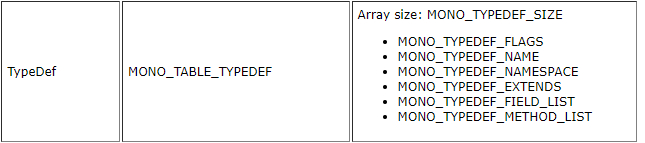

Testing Assembly Loading
So, now we have a function capable of loading a C# assembly. So all we have to do now is make sure it actually works properly. How do we do that? Well, we could of course just check that we get a valid MonoAssembly pointer, but that doesn't strictly mean that everything's working as expected.
In order to properly test it we're going to be iterating over all the class types defined in our assembly, that way we can see exactly what classes, structs and enums are in there. The way we do this is by iterating through the assembly metadata, which we can do by getting access to the type definitions table.
The Code
Alright that sounds good in theory, but how do we do that? Well it's surprisingly easy, although the code can look a bit complicated at first.
void PrintAssemblyTypes(MonoAssembly* assembly)
{
MonoImage* image = mono_assembly_get_image(assembly);
const MonoTableInfo* typeDefinitionsTable = mono_image_get_table_info(image, MONO_TABLE_TYPEDEF);
int32_t numTypes = mono_table_info_get_rows(typeDefinitionsTable);
for (int32_t i = 0; i < numTypes; i++)
{
uint32_t cols[MONO_TYPEDEF_SIZE];
mono_metadata_decode_row(typeDefinitionsTable, i, cols, MONO_TYPEDEF_SIZE);
const char* nameSpace = mono_metadata_string_heap(image, cols[MONO_TYPEDEF_NAMESPACE]);
const char* name = mono_metadata_string_heap(image, cols[MONO_TYPEDEF_NAME]);
printf("%s.%s\n", nameSpace, name);
}
}
Tables
And that's how easy it is to iterate through all the type definitions in our assembly! But, what does this code actually do? Well it's actually quite simple, simply put the assembly itself stores all the necessary info about the data it contains in a set of tables, you can find a list of all the tables and their columns here, scroll down to the "Metadata Tables" section and you'll find a list of them.
Basically what Mono allows us to do is to iterate through all the rows in each table, in the case of the MONO_TABLE_TYPEDEF table each row represents a type, and the columns contains information about that type. We can get a table from an image by making use of mono_image_get_table_info, and passing in the image and the "id" of the table we want.
And as you can see from the code we can get the assembly image from an assembly by calling mono_assembly_get_image and passing in the assembly.
Rows and Columns
After we have the table that we want to iterate through we have to get the number of rows, or type definitions in this case, in that table, we can do that by calling mono_table_info_get_rows and passing in the table info pointer.
We then loop over all rows, and now we have to get all the column values for each row. All columns store their data as unsigned 32-bit integers, and so we start by allocating a stack array called cols, and setting the size of the array to the maximum number of columns for the table we're iterating. Mono provides us with constants that represent the number we need for each table, so in this case we set the size of the array to MONO_TYPEDEF_SIZE.
In order to populate the array we have to decode the current row in the type definitions table, we can do this by calling mono_metadata_decode_row, and passing in a few parameters, while I think the parameters are self-explanatory I realize that might not be the case for everyone, so I'll go through and explain what each parameter is.
The first parameter is the actual table that we're iterating over. The second parameter is the row whose columns we want to get. The third parameter is simply the columns array that we allocated, and the last parameter is the size of that array.
After we've called this function our cols array will now be populated with a bunch of values, and we can now use those values to get some of the data for this type.
A quick note before I explain the rest of the code: The data stored in this array should be used differently depending on what the column represents, in some cases the value is the value that we want, stored right there in the array, other times the value represents an index into a different data structure somewhere else in memory, in the case of the namespace and name of a given type the columns store indices into the string heap.
So sometimes you'd do what we're doing here, and using the value to get a string from the string heap, and sometimes you'd use the value as-is, the MONO_ASSEMBLYREF_MAJOR_VERSION is a good example of this, if you wanted to get the major version of an assembly you'd have simply do uint32_t majorVersion = cols[MONO_ASSEMBLYREF_MAJOR_VERSION];, assuming you have the correct table.
Getting the Type Name and Namespace
Now that I've explained that bit I'll explain the next two lines in the code, you can see they're almost identical, we call mono_metadata_string_heap for both lines, and we're passing in the image, and some value from the columns.
First we're getting the namespace name by accessing the value stored in the MONO_TYPEDEF_NAMESPACE column, again that value is an index into the string heap, where the name of our namespace is located. If a type doesn't have a namespace, meaning it's in the global namespace, this function will simply return an empty string.
Next we do almost the exact same thing, except we're getting the value in the MONO_TYPEDEF_NAME column.
As you can see from the image below there's still a few other columns in the MONO_TABLE_TYPEDEF table, I'm not going to cover them here right now, but I'll make sure to properly cover them at a later date.

Alright! If you now call this function (after you've loaded the assembly) you should see all types stored in your assembly printed to the console.
The Module Type
Now you might've noticed that the very first type printed is called <Module>, and you probably realize that there's no type with that name in your project, so what's going on? Well it's actually a type that's provided by the C# compiler, and all C# DLLs and EXEs have this type.
Effectively this type represents your entire assembly, your assembly will always have at least one module, although it's possible to create a Multifile Assembly which is an assembly that contains multiple modules. Regardless that doesn't matter here, because we will never use the <Module> class in this guide, and you'll most likely never have to use it if you're making a scripting engine.
And that's it for this section! If you saw your types printed in the console it's safe to assume that everything works as expected and you've learned a bit more about how C# assemblies stores data, and we can now move on to actually doing something interesting. In the next section we'll be creating an instance of our CSharpTesting class.